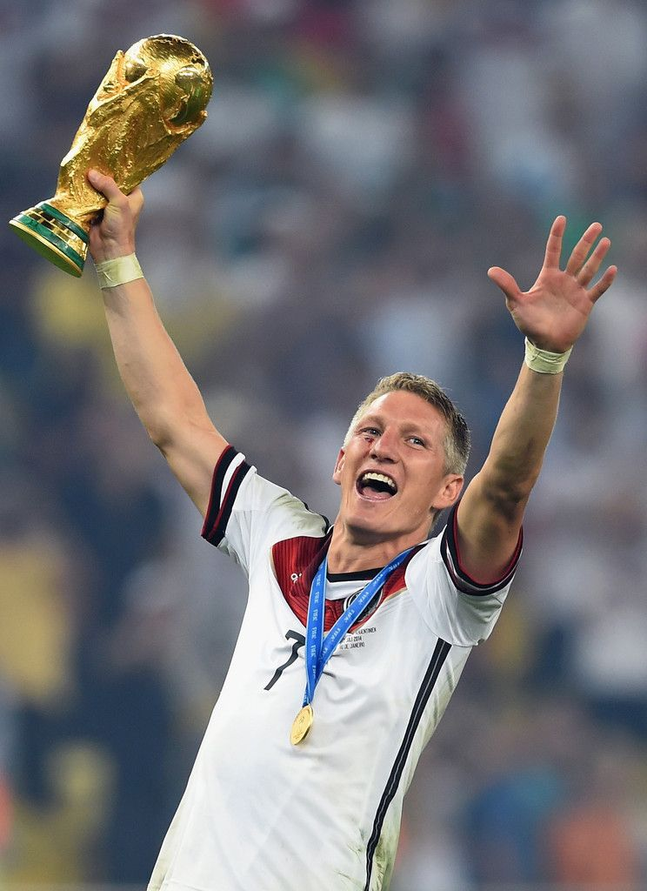
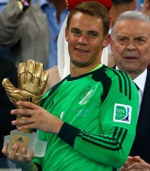

|  |
GermanyChampions The 2014 FIFA World Cup Final was a football match that took place on 13 July 2014 at the Maracanã Stadium in Rio de Janeiro, Brazil to determine the 2014 FIFA World Cup champion.[2][3] Germany defeated Argentina 1–0 in extra time, with the only goal being scored by Mario Götze, who collected André Schürrle's cross from the left on his chest before volleying a high left-footed shot into the net. The match was the third final between the two countries, a World Cup record, after their 1986 and 1990 matches, and billed as the world's best player (Lionel Messi) versus the world's best team |
 |
Lionel MessiGolden Ball The Golden Ball award is presented to the best player at each FIFA World Cup finals, with a shortlist drawn up by the FIFA technical committee and the winner voted for by representatives of the media. Those who finish as runners-up in the vote receive the Silver Ball and Bronze Ball awards as the second and third most outstanding players in the tournament respectively. |
|  |
James RodriguezGolden Ball The Golden Ball award is presented to the best player at each FIFA World Cup finals, with a shortlist drawn up by the FIFA technical committee and the winner voted for by representatives of the media. Those who finish as runners-up in the vote receive the Silver Ball and Bronze Ball awards as the second and third most outstanding players in the tournament respectively. |